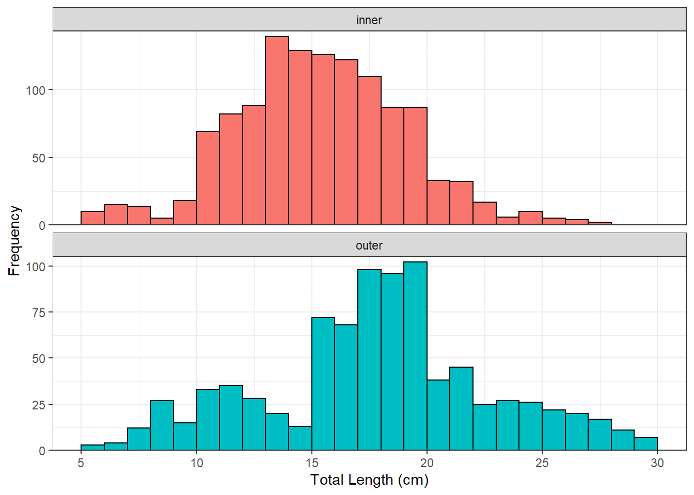

library(FSA)
library(tidyverse)
library(ggplot2)
yp <- read.csv("https://raw.githubusercontent.com/droglenc/FSAdata/master/data-raw/YPerchSB1.csv") %>%
mutate(lcat10=lencat(tl,w=1),
gcat=psdAdd(tl,species="Yellow Perch",unit="cm"))
str(yp)'data.frame': 2074 obs. of 4 variables:
$ tl : num 7.4 5.4 6.7 6 7.5 6.6 6.8 6.1 6.1 7.4 ...
$ loc : chr "inner" "inner" "inner" "inner" ...
$ lcat10: num 7 5 6 6 7 6 6 6 6 7 ...
$ gcat : Factor w/ 6 levels "substock","stock",..: 1 1 1 1 1 1 1 1 1 1 ...ypin <- filter(yp,loc=="inner")
ypout <- filter(yp,loc=="outer")
freq <- xtabs(~loc+lcat10,data=yp)
freq lcat10
loc 5 6 7 8 9 10 11 12 13 14 15 16 17 18 19 20 21 22 23 24
inner 9 15 13 6 12 66 80 94 130 131 113 136 112 92 89 34 31 19 6 11
outer 3 3 11 27 15 29 37 28 23 13 67 69 89 94 109 43 43 30 26 25
lcat10
loc 25 26 27 28 29
inner 5 3 3 0 0
outer 23 20 17 11 9psdin <- psdCalc(~tl,data=ypin,species="Yellow Perch",
what="traditional",units="cm")
psdout <- psdCalc(~tl,data=ypout,species="Yellow Perch",
what="traditional",units="cm")
ggplot(data=yp,mapping=aes(x=tl,fill=loc)) +
geom_histogram(binwidth=1,boundary=0,color="black") +
scale_x_continuous(name="Total Length (cm)",breaks=seq(5,30,5)) +
scale_y_continuous(name="Frequency",expand=expansion(mult=c(0,0.03))) +
theme_bw() +
theme(legend.position="none") +
facet_wrap(vars(loc),scale="free_y",ncol=1)